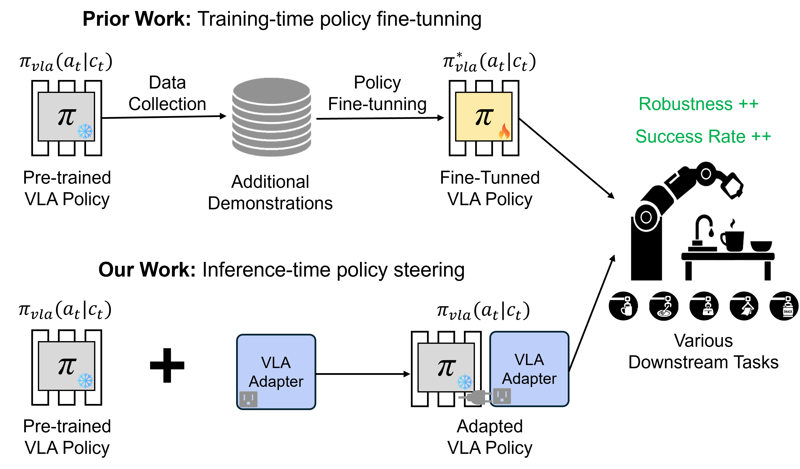
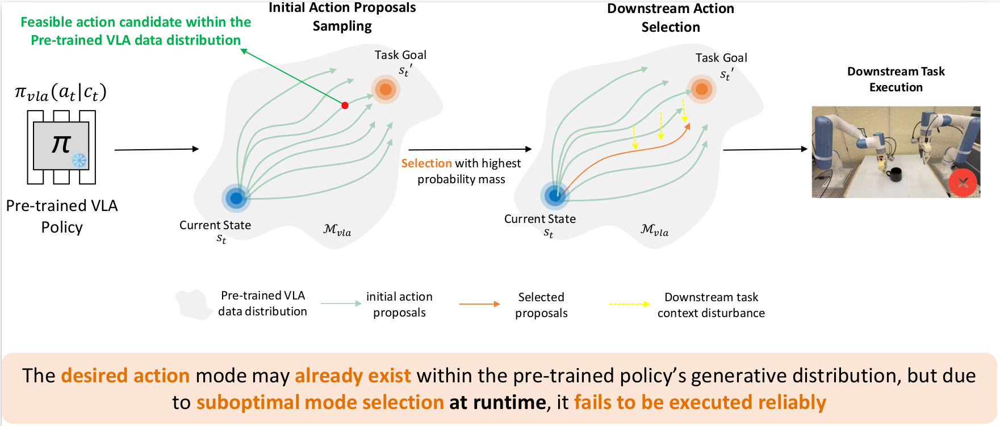
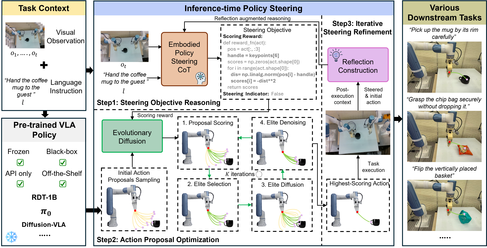
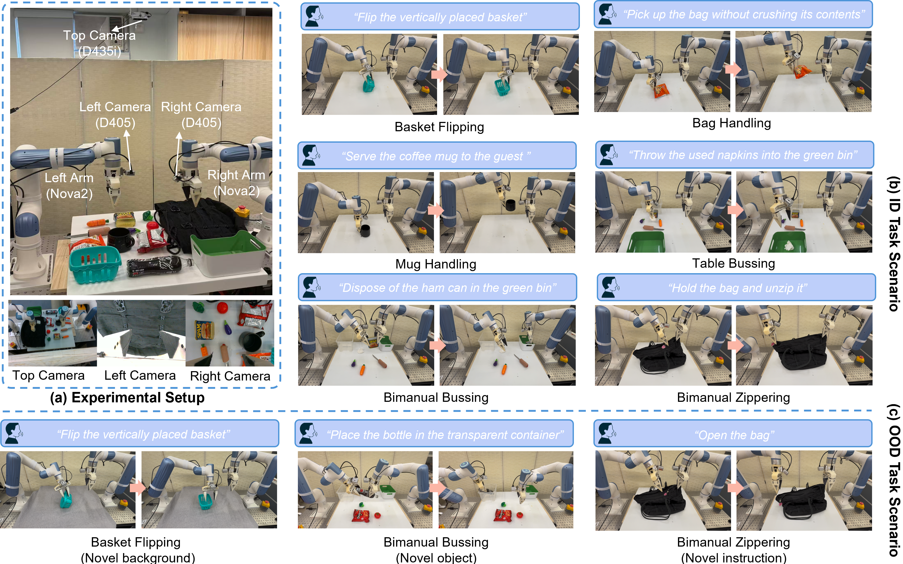
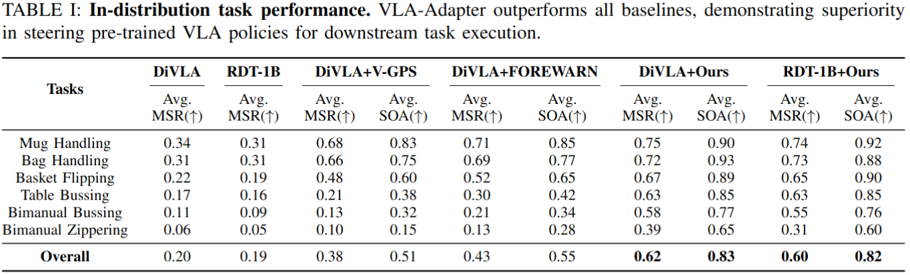

Towards Deploying VLA without Fine-Tuning: Plug-and-Play Inference-Time VLA Policy Steering via Embodied Evolutionary Diffusion
Abstract
Vision-Language-Action (VLA) models have demonstrated significant potential in real-world robotic manipulation. However, pre-trained VLA policies still suffer from substantial performance degradation during downstream deployment. Although fine-tuning can mitigate this issue, its reliance on costly demonstration collection and intensive computation makes it impractical in real-world settings. In this work, we introduce VLA-Pilot, a plug-and-play inference-time policy steering method for zero-shot deployment of pre-trained VLA without any additional fine-tuning or data collection. We evaluate VLA-Pilot on six real-world downstream manipulation tasks across two distinct robotic embodiments, encompassing both in-distribution and out-of-distribution scenarios. Experimental results demonstrate that VLA-Pilot substantially boosts the success rates of off-the-shelf pre-trained VLA policies, enabling robust zero-shot generalization to diverse tasks and embodiments.

Insights
A common approach to mitigate deployment failures of pre-trained VLA models is fine-tuning with task-specific data. While effective, this strategy is impractical in real-world applications due to the high cost of data collection and computational resources, as well as the risk of compromising the generalist capabilities of the pre-trained policies. In fact, such deployment failures do not necessarily indicate that the pre-trained VLA policy is incapable of generating the correct behavior. The desired behavior mode may already exist within the policy's generative distribution, but due to suboptimal mode selection at runtime, it fails to be executed reliably.

Method Overview
Given a task context, VLA-Pilot steers a pre-trained VLA policy at inference time through three tightly integrated steps:
① Steering Objective Reasoning (EPS-CoT). The Embodied Policy Steering Chain-of-Thought (EPS-CoT) module takes the task language instruction and current visual observation as input. It reasons step-by-step to produce a structured, task-aligned reward function that encodes what "good" action execution looks like for the given task — without any human annotation or demonstration.
② Action Proposal Optimization (Evolutionary Diffusion). A population of candidate action proposals is sampled from the pre-trained VLA's diffusion process. Each proposal is scored by the EPS-CoT reward, and an evolutionary selection-and-recombination procedure iteratively refines the population over multiple generations, ultimately executing the highest-scoring action.
③ Iterative Steering Refinement. After each execution step, the EPS-CoT module receives post-execution feedback (visual state, task progress) and updates the steering objective accordingly. This closed-loop refinement loop allows VLA-Pilot to recover from errors and adapt to task-specific dynamics over a full manipulation episode.

Qualitative Results
VLA-Pilot effectively steers off-the-shelf pre-trained VLA policies to complete downstream tasks at inference time, achieving zero-shot deployment across both ID and OOD task scenarios.

Quantative Results
VLA-Pilot outperforms all baselines, demonstrating superiority in steering pre-trained VLA policies for downstream task execution. Specifically, VLA-Pilot consistently enhances the performance of both pre-trained VLA policies in all six downstream tasks, achieving average improvements of +0.31 MSR for DiVLA and +0.30 MSR for RDT-1B.

Conclusion
In this paper, we presented VLA-Pilot, an inference-time policy steering method that enables zero-shot deployment of pre-trained VLA models without any fine-tuning. Both simulation and real-world experiments validate its effectiveness and highlight its potential as a universal and modular plug-in for aligning generalist VLA policies with diverse downstream task goals.
Limitations
Despite its effectiveness, VLA-Pilot has several limitations:
- Diffusion-based architecture dependency. VLA-Pilot assumes that the underlying VLA policy supports noise-conditioned sampling, limiting its applicability to diffusion-based architectures.
- Inference-time latency. The reliance on MLLMs introduces non-trivial inference-time latency.
- Keypoint-based reward grounding. The current reward evaluation paradigm depends on keypoint-based vision grounding, which may be brittle in tasks involving delayed effects or deformable object interactions.
Future directions include extending the steering paradigm to broader VLA architectures, optimizing MLLM integration via quantization or caching strategies, and improving robustness by incorporating richer embodied feedback beyond keypoint-level signals.
Q & A
Does VLA-Pilot require any task-specific training or demonstrations?
Which pre-trained VLA models are compatible with VLA-Pilot?
How does VLA-Pilot compare to fine-tuning approaches?
What is the computational overhead of Evolutionary Diffusion?
Can VLA-Pilot handle out-of-distribution (OOD) tasks?
BibTeX
@article{li2025towards,
title={Towards Deploying VLA without Fine-Tuning: Plug-and-Play Inference-Time VLA Policy Steering via Embodied Evolutionary Diffusion},
author={Li, Zhuo and Liu, Junjia and Dong, Zhipeng and Teng, Tao and Rouxel, Quentin and Caldwell, Darwin and Chen, Fei},
journal={arXiv preprint arXiv:2511.14178},
year={2025}
}